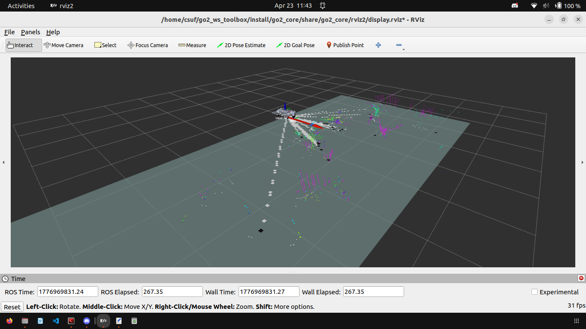
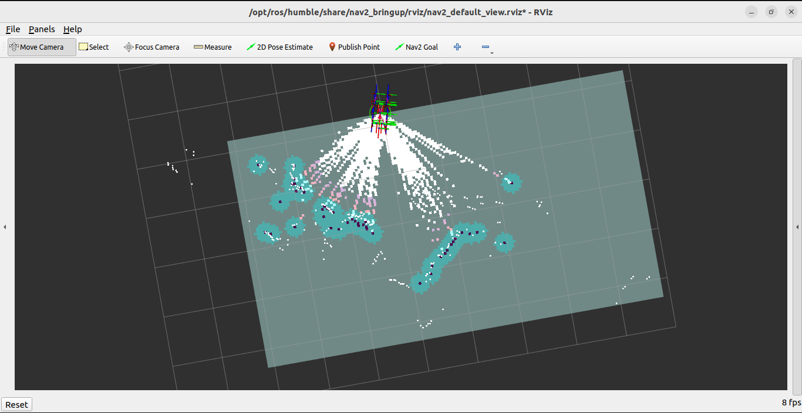
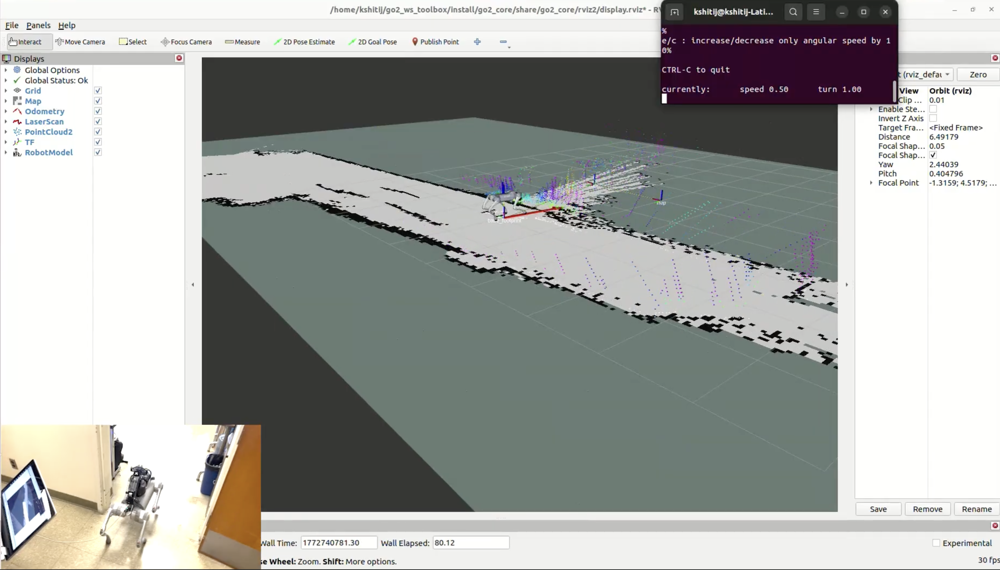

Month2Month Autonomous Robot Dog
Robotics | Testing | Team Project
Built, enhanced, and optimized the autonomous robot dog navigation framework and performance through indoor full-house navigation using SLAM, ROS2, and Python to improve robot's waypoint generation, path tracking, efficiency, and stability.